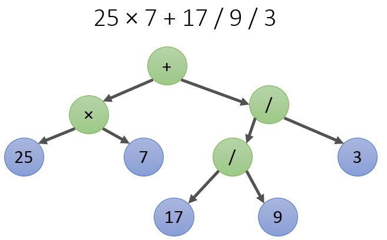
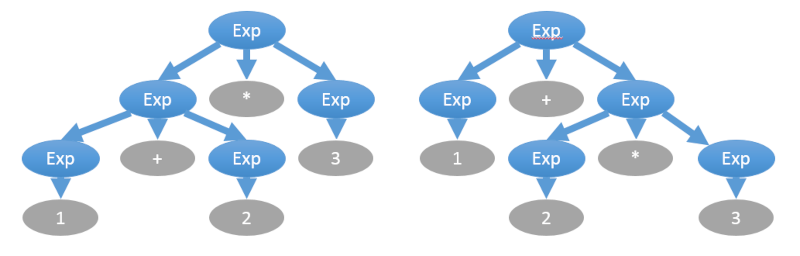
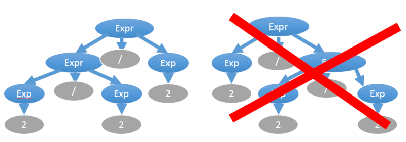

В этой статье вы узнаете, как разобрать арифметическое выражение в привычном формате из строки в структуру данных “дерево”, а затем путём обхода дерева вычислить выражение. Другими словами, мы пишем калькулятор.
У статьи есть пример на github, он написан в процедурном стиле на C++.
Нас интересуют арифметические выражения без скобок и с пятью операторами:
Примеры таких выражений:
12 / 12 / 12 => 0.0833333
25 + 17 / 45 / 2 => 25.1889
Синтаксис выражений можно описать в BNF-нотации (также известной как нотация Бекуса-Наура). Такая нотация ещё называется грамматикой, и выглядит как набор правил:
expression ::= add_sub_expr
add_sub_expr ::= mul_div_expr '+' add_sub_expr
| mul_div_expr '-' add_sub_expr
| mul_div_expr
mul_div_expr ::= atom_expr '*' mul_div_expr
| atom_expr '/' mul_div_expr
| atom_expr '%' mul_div_expr
| atom_expr
atom_expr ::= [0-9]+
Данная грамматика учитывает неравный приоритет операторов: в выражении 1 + 2 * 2 вы сначала должны свернуть 2 * 2 как mul_div_expr по правилу atom_expr '*' mul_div_expr, а потом уже свернуть 1 + mul_div_expr в add_sub_expr. Раскроем эту мысль подробнее с помощью пошаговой трассировки сворачивания правил грамматики:
1) 17 + 25 / 7
2) atom_expr + 25 / 7 # правило atom_expr ::= [0-9]+
3) atom_expr + atom_expr / 7 # правило atom_expr ::= [0-9]+
4) atom_expr + atom_expr / atom_expr # правило atom_expr ::= [0-9]+
5) mul_div_expr + atom_expr / atom_expr # правило mul_div_expr ::= atom_expr
6) mul_div_expr + atom_expr / mul_div_expr # правило mul_div_expr ::= atom_expr
7) mul_div_expr + mul_div_expr # правило mul_div_expr ::= atom_expr '/' mul_div_expr
8) mul_div_expr + add_sub_expr # правило add_sub_expr ::= mul_div_expr
9) add_sub_expr # add_sub_expr ::= mul_div_expr '+' add_sub_expr
Дерево выражения — это вот такая прикольная штука:

Способ превращения выражения в дерево зависит от приоритета операторов, который можно сменить расстановкой скобок. В качестве упражнения попробуйте восстановить тексты двух выражений, деревья которых нарисованы ниже:

Вычислить выражение по дереву легко и просто, достаточно обойти слева направо в глубину, применяя оператор в каждом нелистовом узле к дочерним узлам. Главный вопрос — как собрать дерево, имея строковое выражение?
Мы воспользуемся принципом нисходящего разбора, и применим нисходящий подход к проектированию программы. Сначала опишем функцию, которая получает выражение в виде строки и вычисляет его как число с плавающей точкой:
double Calculate(const std::string &expression)
{
Expression *pExpression = CreateExpression(expression);
const double result = CalculateExpression(pExpression);
DisposeExpression(pExpression);
return result;
}
Expression — это узел дерева. Интересно, что узел дерева сам является деревом, ведь дерево — это рекурсивное понятие, не так ли? В листьях дерева находятся
struct Expression;
// Expression tree node operation code.
enum class Operation
{
NOP, // just a value
ADD, // +
SUB, // -
MUL, // *
DIV, // /
MOD, // %
};
// Expression tree node is expression itself,
// since expressions are recursively defined.
struct Expression
{
double value = 0;
Operation op = Operation::NOP;
Expression *pLeft = nullptr;
Expression *pRight = nullptr;
};
Вычисление выражения по дереву:
double CalculateExpression(Expression *pExpr)
{
// Для листовых узлов возвращаем их численное значение
// если бы у нас была поддержка переменных, мы бы выполнили
// запрос значения переменной по имени в ассоциативном массиве переменных
if (pExpr->op == Operation::NOP)
{
return pExpr->value;
}
// Вычисляем выражения в левом и в правом поддеревьях
assert(pExpr->pLeft);
assert(pExpr->pRight);
CalculateExpression(pExpr->pLeft);
CalculateExpression(pExpr->pRight);
// Применяем операцию текущего узла
switch (pExpr->op)
{
case Operation::ADD:
pExpr->value = pExpr->pLeft->value + pExpr->pRight->value;
break;
case Operation::SUB:
pExpr->value = pExpr->pLeft->value - pExpr->pRight->value;
break;
case Operation::MUL:
pExpr->value = pExpr->pLeft->value * pExpr->pRight->value;
break;
case Operation::DIV:
pExpr->value = pExpr->pLeft->value / pExpr->pRight->value;
break;
case Operation::MOD:
pExpr->value = fmod(pExpr->pLeft->value, pExpr->pRight->value);
break;
case Operation::NOP:
assert(false);
break;
}
return pExpr->value;
}
Мы хотим реализовать функцию Expression *CreateExpression(const std::string &expression);, которая выполняет разбор строки и в случае успеха возвращает указатель на выражение. Для этого на каждое из правил в BNF-нотации объявим по одной функции. Соглашения будут таковы:
Expression *ParseAtom(std::string &str);
Expression *ParseMulDiv(std::string &str);
Expression *ParseAddSub(std::string &str);
В псевдокоде реализация разбора atom должна выглядеть так:
Expression *ParseAtom(std::string &str)
{
// Попытаться считать число.
// Если удалось, пропустить считанную часть str,
// создать Expression* и вернуть его.
// Иначе бросаем исключение
}
Наивная реализация разбора expr_mul_div могла бы выглядеть так:
Expression *ParseMulDiv(std::string &str)
{
// Попытаться считать atom (не удалось - бросаем исключение).
// Проверить, есть ли впереди оператор *, / или %
// если нет, возвращаем Expression* от atom
// если да, считываем и пропускаем оператор
// Попытаться считать atom (не удалось - бросаем исключение).
// Формируем Expression из двух atom и оператора
}
К сожалению, такая реализация не сможет разобрать выражение “abc”, в котором число операций одного уровня — 3 или более. Сразу заметим, что в разборе таких выражений надо учитывать жестокие правила ассоциативности, например, «2/2/2» правильно вычисляется как «(2/2)/2=0,5», а не «2/(2/2)=2»

Именно из-за левой ассоциативности деления такая реализация не подходит (но она подошла бы для правоассоциативных правил, таких как присваивание):
Expression *ParseMulDiv(std::string &str)
{
// Попытаться считать atom (не удалось - бросаем исключение).
// Проверить, есть ли впереди оператор *, / или %
// если нет, возвращаем Expression* от atom
// если да, считываем и пропускаем оператор
// Попытаться рекурсивно считать expr_mul_div (не удалось - бросаем исключение).
// Формируем Expression из atom, expr_mul_div и оператора
}
Если же попытаться при разборе expr_mul_div в первую очередь искать вложенный expr_mul_div, то будет очевидная бесконечная рекурсия и следующее за ней переполнение стека программы. Поэтому нам ничего не остаётся, кроме как заменить рекурсию на цикл, и на каждой итерации цикла присоединять уже собранный expr_mul_div к новому как левое поддерево.
В реализациях этих функций мы применим три дополнительные функции, которые по тем же принципам отсекают от строки пробельные символы, число и следующий оператор соответственно:
void SkipSpaces(std::string &expression)
{
size_t numSize = 0;
while (numSize < expression.size()
&& (expression[numSize] == ' '))
{
++numSize;
}
expression = expression.substr(numSize);
}
// Skips spaces, then reads until first non-digit character.
// If successful, removes read characters from `expression`
// and returns true.
bool ParseDouble(std::string &expression, double &result)
{
std::string remainingStr = expression;
SkipSpaces(remainingStr);
size_t numSize = 0;
if (remainingStr.size() > 0 && isdigit(remainingStr[0]))
{
while (numSize < remainingStr.size()
&& isdigit(remainingStr[numSize]))
{
++numSize;
}
result = std::stod(remainingStr.substr(0, numSize));
expression = remainingStr.substr(numSize);
return true;
}
return false;
}
// Skips spaces, then reads next operator symbol.
// If successful, removes read characters from `expression`
// and returns true.
bool ParseOperator(std::string &expression, Operation &op)
{
std::string remainingStr = expression;
SkipSpaces(remainingStr);
if (remainingStr.empty())
{
op = Operation::NOP;
return false;
}
switch (remainingStr[0])
{
case '+':
op = Operation::ADD; break;
case '-':
op = Operation::SUB; break;
case '*':
op = Operation::MUL; break;
case '/':
op = Operation::DIV; break;
case '%':
op = Operation::MOD; break;
default:
op = Operation::NOP; break;
}
const bool succeed = (op != Operation::NOP);
if (succeed)
{
expression = remainingStr.substr(1);
}
return succeed;
}
Теперь можно показать, как выглядят реализации функций разбора по правилам грамматики. Не забываем о ранее запланированной замене рекурсии на цикл.
// Parses expressions like: `a`, `a+b±...`, `a-b±...`,
// where each sub-expression parsed by `ParseMulDiv`.
Expression *ParseAddSub(std::string &str)
{
Expression *left = ParseMulDiv(str);
while (true)
{
Operation op = Operation::NOP;
// Don't remove operator from remaining string
// when this operator remains unhandled.
std::string remainingStr = str;
if (!ParseOperator(remainingStr, op)
|| (op != Operation::ADD && op != Operation::SUB))
{
return left;
}
str = remainingStr;
Expression *right = nullptr;
try
{
right = ParseMulDiv(str);
}
catch (...)
{
DisposeExpression(left);
throw;
}
try
{
Expression *expr = new Expression;
expr->pLeft = left;
expr->pRight = right;
expr->op = op;
left = expr;
}
catch (...)
{
DisposeExpression(left);
DisposeExpression(right);
throw;
}
}
return left;
}
// Parses expressions like: `a`, `a*b...`, `a/b...`, `a%b...`
// where each sub-expression parsed by `ParseAtom`.
Expression *ParseMulDiv(std::string &str)
{
Expression *left = ParseAtom(str);
while (true)
{
Operation op = Operation::NOP;
// Don't remove operator from remaining string
// when this operator remains unhandled.
std::string remainingStr = str;
if (!ParseOperator(remainingStr, op)
|| (op != Operation::MUL && op != Operation::DIV && op != Operation::MOD))
{
return left;
}
str = remainingStr;
Expression *right = nullptr;
try
{
right = ParseAtom(str);
}
catch (...)
{
DisposeExpression(left);
throw;
}
try
{
Expression *expr = new Expression;
expr->pLeft = left;
expr->pRight = right;
expr->op = op;
left = expr;
}
catch (...)
{
DisposeExpression(left);
DisposeExpression(right);
throw;
}
}
return left;
}
// Parses atom expression, like a number.
Expression *ParseAtom(std::string &str)
{
Expression *expr = new Expression;
if (!ParseDouble(str, expr->value))
{
DisposeExpression(expr);
throw std::invalid_argument("Expected number at: " + str);
}
return expr;
}
Другие примеры и теоретические выкладки по рекурсивному спуску есть в сети:
В нашем парсере происходит множественное копирование строк в процессе разбора. Этого можно было бы избежать, если каждая рекурсивно вызываемая функция принимала бы string_view — невладеющую ссылку на строку. Реализацию string_view можно раздобыть несколькими способами:
По сути string_view — это удобная замена такой вот структуры для чтения строки слева направо:
struct StringScanState
{
std::string text;
size_t position;
};
Перед кодированием составьте исправленную BNF-грамматику, чтобы спроектировать, как добавить новую возможность.